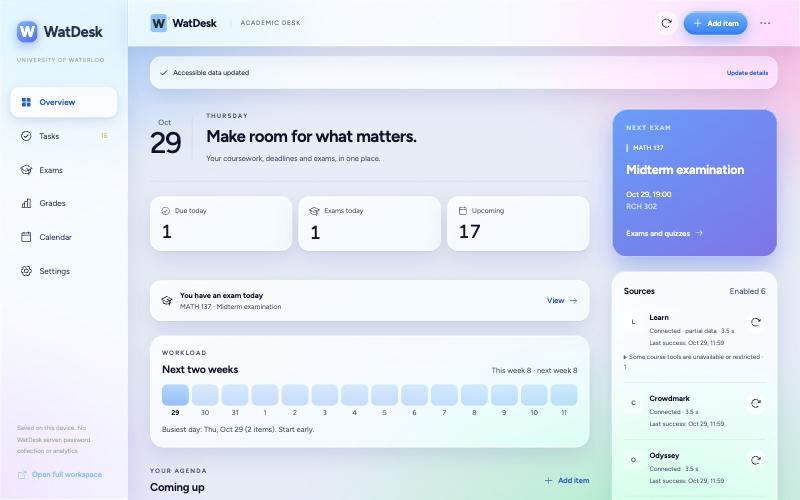
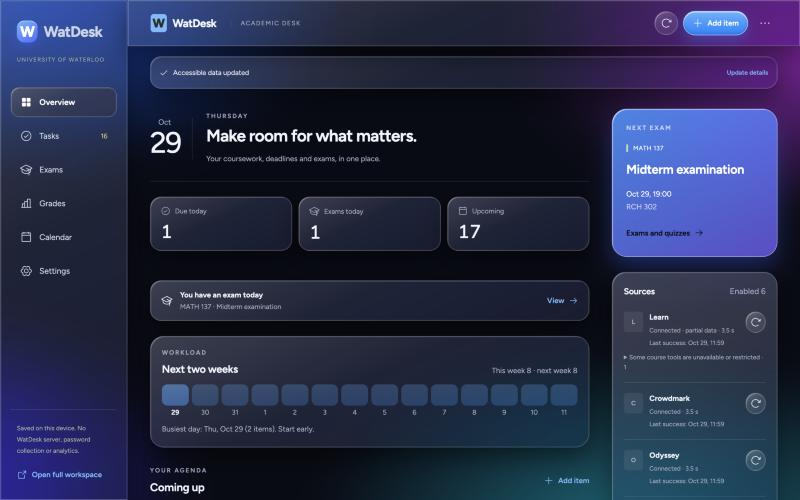

Ray Tian
Reproduce the bug. Patch it. Prove it stays fixed.
First-year Honours Mathematics (Co-op) student at the University of Waterloo, interested in software engineering, data science and quantitative development. I build student tools and contribute to open source. I also organize peer groups, volunteer in my community, and make things, from short films to music.
36 pull requests to other people's projects.
One tile each.
Hover or tap a tile for the PR. Colour is status, checked against GitHub and each project's main history. Nothing is counted twice.
Squashed and consolidated PRs are shown separately and are not counted as merged. Most of this work was developed with AI coding assistance, which the PR descriptions state; I scope each bug, review the diff and check the tests. Pull requests in my own repositories are excluded.
Reproduce
Build a failing case first: ASan/UBSan harness, real PDF round-trip, a timezone matrix.
Patch
Smallest change that fixes the root cause, scoped so a maintainer can review it.
Verify
Show it fails before and passes after, and say plainly what was not tested.
Upstream
Answer maintainers, then link the commit that proves it landed.
Things I built.
Independent projects, kept apart from the contribution numbers.
WatDesk
One side panel for Waterloo deadlines, exams and grades from LEARN, Crowdmark and Odyssey. It reads each site in your own signed-in session, keeps data in the browser, never sees passwords and never submits anything for you.
Independent student project, not a University of Waterloo product. Edge Add-ons listing is under review; install from GitHub releases.


Local-first macOS analysis of one-to-one chats: read-only access, anonymisation, SQLite, Keychain.
TypeScript CodeCompass ↗Desktop app for understanding unfamiliar codebases, local-first.
Rust · Tauri · React · SQLite Chronicle ↗Privacy-first desktop app for rediscovering file activity.
Rust Madeira-Experimental ↗Unofficial research fork: Windows x64 Vulkan on iPad. Incomplete; not an official port.
CBefore, after, and the receipts.
Numbers on the left are what my PR reported; the chain on the right is what the maintainers actually did. They are different kinds of evidence and are labelled that way.
Every pull request.
external pull requests, from the same data as the wall above. Updated .